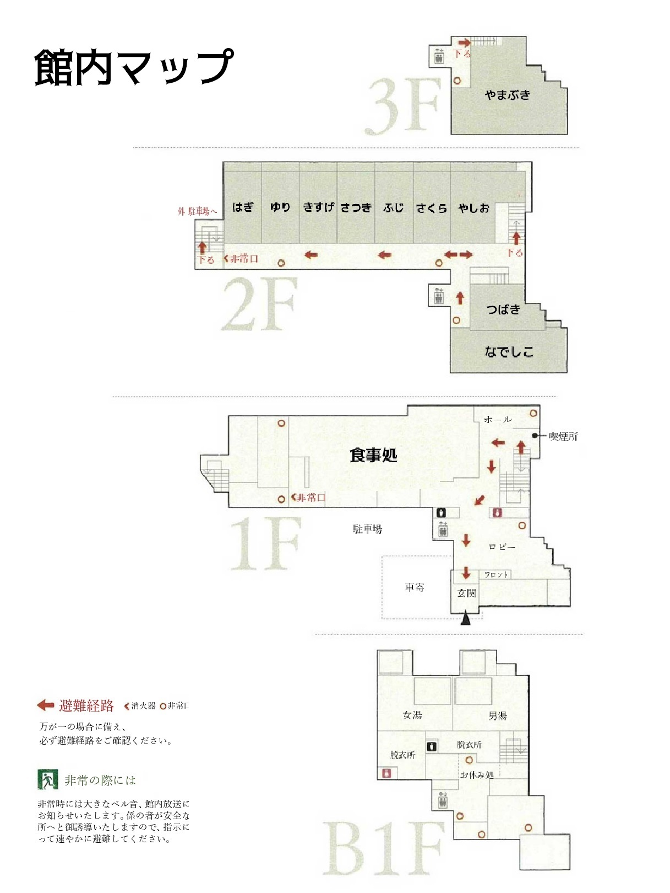

📑 もくじ
1. しゅっきんじのじゅんび
ジムショへ アイサツ、ショクジバショの ヘヤワリを かく
ノイヒンされた ユカタなどが、テーブルにあれば、かたづけます。
タブレットの ボウハンカメラ きどう
タブレットで ボウハンカメラを きどうし、つねに カンシ できるようにします。
みずやのかたづけ
みずやの グラスなどをかたづけ、ジムショに マッチャわんや ヨウカンをもっていきます。
ポットの おんどへんこう
ポットのおんどを90どから98どにへんこうします。
2. おきゃくさまの ライカンかくにん
タブレットかくにん
さぎょうしながら、タブレットの カメラがめんを かくにんし、おきゃくさまの ライカンをチェックします。
3. おきゃくさまのおむかえ
チュウシャジョウでの たいおう
くるまが チュウシャジョウに トウチャクしたら、おきゃくさまを むかえにいき、「いらっしゃいませ」とあいさつします。
「おはこびできる、おにもつ があれば、おてつだいします。」とおつたえし、にもつを はこんでフロントへ あんないします。
4. フロントでのたいおう
にもつのとりあつかい
フロントに あんないしたら、「にもつを テーブルに おかせていただきます。」とおつたえし、にもつを おきます。
チェックインのてつづき
おきゃくさまに チェックインを していただきます。
まえの おきゃくさまが いたり、スタッフが いないばあいは、「ごあんないしますので、おかけいただいて、しょうしょう おまちください」とおつたえして、イスにすわってもらう。
5. にもつをはこぶ
にもつの かくにんとはこぶ
チェックインじに おきゃくさまの にもつを へやに はこんでもよいかかくにんします。
へやめいと はこんでもよい にもつを かくにんして、にもつを へやにはこびます。
6. マッチャとヨウカンのじゅんび
じゅんび さぎょう
マッチャと ヨウカンの じゅんびをします。
7. ゆかたのとりあつかい
ゆかたと コモノの おあずかり
じょせいの おきゃくさまが、ゆかたと コモノを えらびおえたら、おあずかりして「あとで、おちゃといっしょに、へやに、はこばせていただきます。」とおつたえします。
8. おへやへのはいぜん
へやに トウチャク
おきゃくさまが エレベーターで、へやにあがったら、マッチャをたてて、ゆかたといっしょに へやに はこびます。
へやのドアを 3かいノックし、「しつれいいたします。」といいながら へやに はいります。
マッチャと ヨウカンの はいぜん
「おちゃの ごよういを させていただきます。」といい、テーブルに、マッチャと ヨウカンを はいぜんします。
「こちらは、マッチャと、ジカセイの ヨウカンですので、おめしあがりください。」と せつめいします。
9. タブレットと チョウショクの あんない
タブレットの つかいかた
「こちらの タブレットに、インフォメーションを ごよういしておりますので、ごらんください。」とおつたえします。
チョウショクの あんない
o 「こちらは、チョウショクの ごあんないです。キホンのセットに、したの3つのチョイスから おすきなものを えらんでください。ごユウショクの さいに おうかがいします。」とあんないします。
· SPちょうしょくの あんない
「こちらは、ちょうしょくの ごあんないとなります。
おひとりさまづつ おすきなのみものと たまごのり
ょうりをえらんでいただいております。
ごゆうしょくの さいに、おうかがいさせて いただ
きますので、それまでに おきめください。
10. へやセツビのあんない
デンワの つかいかた
「なにかございましたら、こちらの デンワの ジュワキをあげて、フロントボタンをおして、ごれんらく ください。」とあんないします。
11. ゆかたの しまいかた
ゆかたと こものの セイリ
「おえらびいただいた ゆかたをしまわせていただきます。」といいながら ゆかたをしまいます。
「こちらに ゆかたと バスタオル、フリーサイズのサムエがあります。 カンナイは どちらでもだいじょうぶですので、すごしやすいかっこうですごしてください。」とせつめい します。
12. へやをでる
へやをでる
「ごゆっくり、おすごしください。」とつたえ、へやを でます。
くつとスリッパのこうかん
へやを でたあと、ゲンカンの おきゃくさまの くつとスリッパをこうかんします。
1. きほん ぎょうむ の ながれ
あさ の ふつう の しごと を しながら、タブレット の えいぞう で フロント の じょうきょう を かくにん。
9じ50ふん に なったら、おきゃくさま の チェックアウト の じょうきょう に おうじて フロント ちかく で たいき し、チェックアウト たいおう を ゆうせん。
フロント に おきゃくさま が きて チェックアウト を される ばあい、または フロント から の よびだし が あった ばあい は すみやか に むかう。
9じ50ふんまえ の チェックアウト の とき、しごと に もどる か たいき を つづける か はんだん が むずかしい ばあい は、かならず おかみ または せんむ に かくにん を とる。
2. チェックアウト の たいおう
かいけい の たいき
チェックアウトを している（まっている） おきゃくさまに「ありがとうございました。」と あいさつをいって、フロント にて おきゃくさま の かいけい が おわる まで たいき。
かいけい しゅうりょう ご、えがお で おれい を いう。
きねん さつえい の あんない
「よろしければ げんかんまえ で きねん さつえい を している の ですが、いかが でしょうか？」と おこえがけ。
※にもつが あるときは フロントにおいて さつえいをすることを おすすめする
おきゃくさま から カメラ や スマートフォン を あずかり、げんかん いりぐち の かんばん を ふくめた じょうたい で 1まい から 2まい ほど さつえい する。
さつえい ご、おきゃくさま に おれい を いって おかえし する。
おみおくり の たいおう
あるいて かえる おきゃくさま：いりぐち まで ごあんない し、おみおくり。
バス・タクシー を りよう する おきゃくさま：
「おこえがけ します ので、なか で かけて おまち ください」 と ごあんない。
そうげい しゃりょう が とうちゃく したら、おきゃくさま を しゃりょう まで あんない。
じたくしゃ の おきゃくさま：
「おにもつ を おくるま まで おはこび いたします」 と おこえがけ。
おにもつ を はこび、おくるま まで ごあんない。
おみおくり を し、おきゃくさま の しゅっぱつ を みとどける。
3. チェックアウト ご の ぎょうむ
9じ50ふんまえ で あれば、バス や タクシー を まつ おきゃくさま には、きねん さつえい ご に せき で おまち いただく よう ごあんない し、ふつう の しごと（ちょうしょく の かたづけ など） に もどる。
ほか に チェックアウト の おきゃくさま が いない ばあい、ふつう の しごと に もどる。
チェックアウト の おきゃくさま が つづく ばあい は、たいおう を ゆうせん。
チェックアウト が おちついたら、フロント まわり の せいり・せいそう を おこなう。
ポイント
えがお で ていねい な たいおう を こころがける。
おきゃくさま が スムーズ に しゅっぱつ できる よう、すみやか に こうどう する。
ひつよう に おうじて フロント スタッフ と れんけい を とる。
9じ50ふんまえ の たいおう の はんだん が むずかしい ばあい は、かならず おかみ または せんむ に かくにん する こと を てってい する。